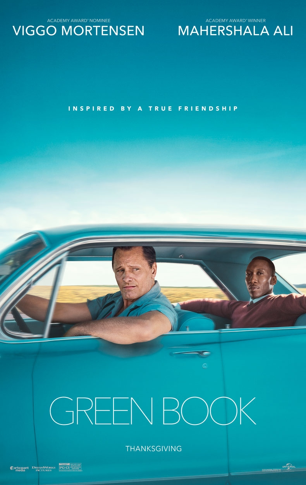

Green Book
In 1962, while his nightclub is closed for repairs, fierce bouncer Frank "Tony Lip" Vallelonga
looks for work. The most intriguing proposition ends up being Don Shirley, an African-American
classical pianist, who needs a driver for a concert tour of the Deep South. Tony accepts the job
despite having little enthusiasm for working for a Black guy, and they set out on their journey with
"The Negro Motorist Green Book," a road safety manual for navigating America's racial segregation.
Because of their divergent perspectives on life and ideals, the snobbishly scholarly pianist and the
bluntly pragmatic bouncer can hardly get along. However, as the unlikely team travels through and endures
America's horrifying injustices,they develop a fresh respect for one other's talents.In doing so, they
nurture an understanding and a friendship that would change both their lives.
Director : Peter Farrelly
Parasite
The Kim family, made up of Chung-sook and Ki-taek and their children Ki-woo and Ki-jung,
reside in a run-down apartment in one of Seoul's lower-working-class neighborhoods. Ki-woo, who aspires
to attend college, is chosen by Min, a fellow student, to take over Park Da-hye's teaching duties. A
affluent family named the Parks resides in a Namgoong-designed modernist home. Ki-woo is advised by Min
to make up his schooling in order to land a job. Mrs. Park is searching for an art therapist for Da-song
when Ki-woo learns about it, and Ki-woo suggests Ki-jung as the most gullible person.
The Kims will orchestrate the termination of the Parks' staff by replacing the current servants.
The Parks' housekeeper Moon-gwang might be the most challenging to get rid of. How far the Kims will go
in their attempt to impersonate the Parks is the key question.
Director : Bong Joon Ho
Nomadland
Fern (Frances McDormand) packs her van and hits the road to explore a life as a modern nomad
outside of traditional society after the economic collapse of a small town in rural Nevada. Real nomads
Linda May, Swankie, and Bob Wells serve as Fern's guides and companions as she travels through the wide
American West in Chloé Zhao's third feature film, NOMADLAND.
Director : Chloé Zhao
CODA
Massachusetts' Gloucester. Ruby Rossi, a senior in high school,
always has a lot on her plate because she is a Child of Deaf Adults and the only
hearing member in her family. In fact, it can be too much for a teenager to try to balance
education, social life, her father's fishing boat's backbreaking work, and the demands of her family.
Ruby likes to sing, but do her parents realize this? When Ruby joins the school chorus, singing takes on
a life of its own, and the gifted young woman is suddenly faced with a decision: should she spread her wings
and pursue her dreams, or should she continue to fight daily battles as a member of the proud Rossi clan
Director : Sian Heder
Everything Everywhere All at Once
Overworked Evelyn Wang tries to deal with everything, including her strained relationships with her
critical father Gong Gong and her daughter Joy. Her laundromat is on the verge of disaster, and her marriage to
her cowardly husband Waymond is in trouble. She must also prepare herself for an uncomfortable encounter with Deirdre,
the unkempt IRS auditor, an impersonal bureaucrat. But as the stern agent grows impatient, a mysterious multiverse
fissure develops into an eye-opening investigation of alternate realms. Evelyn might go into the rabbit hole. In the
universe, how many stars are there? Can worn-out Evelyn comprehend the unstoppable force of possibilities, use newly
discovered abilities, and stop a villain from destroying the thin, innumerable layers of the invisible world?
Director : Daniel Kwan, Daniel Scheinert